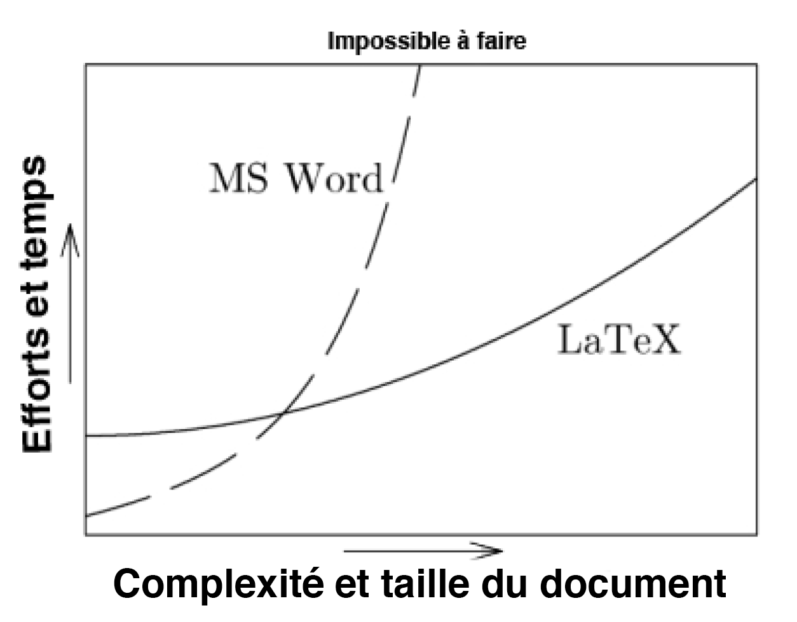

7 Langages de balisage
7.1 Baliser les sciences sociales : langages et pratiques
Lorsque vous lisez un article scientifique, une page Web ou un curriculum vitæ professionnel, vous vous doutez peut-être que le texte n’est pas toujours produit à l’aide d’un logiciel de traitement de texte comme Microsoft Word, Apple Pages ou LibreOffice Writer. La mise en page complexe réglée au millimètre près, la qualité des figures et des tableaux, l’utilisation de gabarits professionnels, le style des références ou encore la présence d’éléments interactifs sont difficiles et parfois impossibles à reproduire à l’aide d’un logiciel de traitement de texte régulier. L’ajout d’extraits de code, de tableaux de régression ou encore de figures de haute qualité graphique, ainsi que leur personnalisation, nécessitent une interface particulière.
Pour ces raisons et plusieurs autres, les chercheurs en sciences sociales font souvent appel aux langages de balisage, ou markup languages. Ceux-ci permettent de produire des documents et pages Web sans les limitations des logiciels de traitement de texte. Le présent livre, par exemple, est écrit à l’aide du langage de balisage Markdown avec l’aide du système de publication Quarto. Les logiciels de traitement de texte et les langages de balisage font tous partie de la catégorie des outils de rédaction. D’entrée de jeu, vous vous demandez peut-être quelle est l’utilité d’apprendre des langages de balisage alors que les logiciels de traitement de texte sont nombreux, simples d’approche et en amélioration constante. Ce chapitre n’a pas pour objectif de décourager l’utilisation de ces logiciels, qui sont utiles et même souvent essentiels pour la production rapide de documents ainsi que pour des tâches de suivi des modifications et de travail avec des équipes multidisciplinaires. Le chapitre tentera plutôt de démontrer que la maîtrise des langages de balisage constitue un avantage pour ceux qui souhaitent s’initier au monde de la recherche académique, même si quelques difficultés initiales d’apprentissage peuvent se présenter. Il s’agira de répondre, tour à tour, aux trois grandes questions suivantes : Qu’est-ce qu’un langage de balisage? Quand et pourquoi utiliser un langage de balisage? Comment utiliser un langage de balisage? L’accent sera mis sur Quarto ainsi que sur les langages Markdown et , bien que d’autres langages soient aussi abordés.
7.2 Qu’est-ce qu’un langage de balisage?
Un langage de balisage constitue un ensemble de commandes qui peuvent être entremêlées à du texte afin de produire une action informatique. Chaque langage contient son propre ensemble de commandes cohérentes et complémentaires. De manière plus formelle, ces commandes sont nommées balises (tags en anglais) et inscrites par le chercheur ou la chercheuse au travers du texte. Les balises constituent une manière de communiquer avec le logiciel utilisé dans un langage qu’il peut comprendre. Par exemple, une balise permet d’indiquer au logiciel que vous désirez qu’une section du texte soit écrite en caractères gras, en italique, à double interligne ou encore que vous souhaitez positionner une image d’une certaine manière au travers du texte. Cette interaction est rendue possible par la standardisation des langages de balisage : chaque balise correspond à une action précise, peu importe le logiciel utilisé, la langue dans laquelle le texte est rédigé, le type d’ordinateur utilisé, etc. Dans votre document source, les balises sont entremêlées au contenu de votre document. Au moment de compiler ce dernier, les balises produisent les actions informatisées qu’elles commandent et laissent comme document final le contenu mis en page tel que vous l’avez défini via les balises utilisées. La compilation est le processus par lequel un document écrit en langage de balisage est transformé en fichier textuel, en format PDF dans le cas de par exemple. La Figure 7.1 montre un exemple d’utilisation du langage de balisage Markdown dans un fichier Quarto sur la plateforme Visual Studio Code. L’écran à droite de l’image montre le fichier PDF résultant du formatage réalisé dans la partie centrale de l’écran. Les balises utilisées sont décrites plus tard dans ce chapitre.
Le premier langage de balisage, le Generalized Markup Language (GML), a été inventé en 1969 par les chercheurs Charles F. Goldfarb, Ed Mosher et Ray Lorie pour la compagnie IBM. Goldfarb et ses collègues devaient intégrer trois applications créées avec des langages différents et avec une logique différente pour les besoins d’un bureau de droit. Même après avoir créé un programme qui permettait aux trois applications d’interagir, ces langages demeuraient différents et avaient chacun leur propre fonctionnement. Le développement de GML a permis de résoudre ce problème en standardisant et en structurant le langage : les mêmes commandes étaient utilisées pour accomplir les mêmes tâches dans chaque programme (The Roots of SGML – A Personal Recollection, 1996). GML a été amélioré durant les décennies suivantes et a été suivi par d’autres langages de balisage, dont (1985), Bib(1988), HTML (1993), XML (1998), Markdown (2004) et R Markdown (2012) (Getting Started, 2023, HTML History | Explained, 2023, LaTeX, 2023; worldwidewebconsortiumw3c98?; xie23?).
Les langages de balisage permettent d’effectuer différentes tâches. HTML, qui est sans doute le plus connu des langages de balisage, permet de formater des sites Web. XML, quant à lui, permet de structurer de larges volumes de données. permet pour sa part de formater du texte et de créer des documents en format PDF. Markdown permet également de créer des documents en format PDF, mais aussi en format HTML ou DOCX — format utilisé pour les documents Word —, contrairement à . R Markdown permet d’ajouter des extraits de code R à un fichier en langage Markdown. Enfin, depuis 2022, le système de publication scientifique et technique multilingue Quarto permet de créer des documents qui intègrent des extraits de code R, , Python, Julia ou JavaScript, créés dans différents types d’environnements, à un fichier en langage Markdown (allaire22?). , Markdown, R Markdown et Quarto permettent aussi d’intégrer les références bibliographiques du système de traitement de références Bib. Les langages de balisage communiquent ainsi souvent les uns avec les autres au sein d’un même fichier. Le chapitre 6 explique la manière de citer les références en langage Bibpar le biais de Zotero et de Better Bib.
Les balises constituent une manière de donner manuellement des commandes au logiciel que vous utilisez. Si vous utilisez Microsoft Word, vous avez accès à une panoplie de boutons qui vous permettent de formater votre texte. Les balises exercent les mêmes fonctions de formatage pour les fichiers produits en ou en Markdown, mais doivent être ajoutées à l’écrit par l’utilisateur. Lorsque vous appuyez sur un bouton ou utilisez une commande comme Ctrl-G ou Cmd-I dans Word, en réalité, cette commande ajoute des balises au travers de votre texte, mais rend celles-ci invisibles dans l’interface que vous utilisez. Cela permet d’avoir un texte élégant et facile à lire, mais comporte aussi plusieurs inconvénients. Le principal inconvénient est de limiter le pouvoir que vous avez sur le formatage de votre texte. En effet, si les boutons à votre disposition ne vous permettent pas de réaliser une opération, celle-ci sera éternellement impossible à réaliser pour vous. A contrario, les langages de balisage permettent un contrôle presque infini sur les opérations que vous souhaitez réaliser. Incidemment, dans la mesure où vous utilisez le langage approprié pour la tâche que vous souhaitez accomplir, vous devriez être capable de donner exactement la commande nécessaire à votre logiciel. Les langages de balisage, bien qu’ils aient un coût d’apprentissage qui peut s’avérer important et que l’interface de travail soit moins intuitive qu’un document Word, vous offrent une plus grande flexibilité.
Afin d’utiliser un langage de balisage, il est impératif que le logiciel que vous utilisez puisse prendre en compte ce langage. Un logiciel permet rarement d’utiliser n’importe quel langage. Par exemple, le logiciel Shop permet seulement d’utiliser le langage . Il est aussi impératif de bien utiliser le langage de balisage. En effet, comme pour les langages de programmation, les langages de balisage ne peuvent pas déduire ce que vous souhaitez leur faire comprendre. Si vous souhaitez mettre du texte en gras, vous devez utiliser les bonnes balises. La moindre erreur peut être coûteuse, puisqu’une erreur dans la balise que vous utilisez risque de produire une commande incompréhensible et un message d’erreur, le logiciel ne réussissant pas à associer votre balise mal inscrite à une action informatisée. Conséquemment, il est impératif de bien vérifier les balises utilisées afin d’éviter toute erreur qui empêcherait votre document d’être compilé, c’est-à-dire d’être traduit dans son format final10. Chaque caractère dans une balise est important et il y a rarement plus d’une seule manière de commander une action. Par exemple, en , il n’y a qu’une seule manière de mettre du texte en gras. Il faut précisément utiliser cette commande: \textbf{}. Le positionnement des balises est lui aussi critique : il délimite la portion de texte à laquelle doit être appliquée l’action commandée par la balise.
Il est important de distinguer les langages de balisage des langages de programmation, qui sont abordés plus en détail dans le chapitre 4. En effet, ceux-ci sont similaires à certains égards, mais ont des vocations différentes. Les deux s’appuient sur un langage informatisé, mais les langages et leurs objectifs diffèrent. Un langage de programmation définit des processus informatisés alors qu’un langage de balisage permet d’encoder du contenu de manière à ce que celui-ci soit lisible tant pour l’humain que pour son ordinateur.
Dans le contexte de la recherche en sciences sociales, la programmation est généralement utilisée afin de récolter, d’analyser et de présenter visuellement des données. Une fois cartes, tableaux et graphiques produits, ceux-ci peuvent être enregistrés — par exemple en format PDF ou PNG — et inclus au sein d’un document qui sera formaté en utilisant un langage de balisage. En R Markdown et en Quarto, des extraits de langage de programmation peuvent être inclus dans des sections bien délimitées de documents écrits en langage de balisage. Plus généralement, le langage de programmation contribue à l’analyse alors que le langage de balisage est essentiellement utile afin de présenter les travaux de recherche, que ce soit dans un document écrit ou sur un site Web. C’est principalement de cette manière que sont utilisés les langages de programmation et de balisage dans le cadre de la recherche en sciences sociales.
7.4 Quand et pourquoi utiliser un langage de balisage?
La plupart des langages de balisage permettent de remplir l’une des deux fonctions suivantes, qui sont particulièrement importantes dans le contexte de la recherche en sciences sociales : produire des documents écrits et formater des pages Web. Dans les deux cas, ces actions peuvent être réalisées à partir de logiciels simples, mais ces logiciels ont des limites importantes auxquelles les langages de balisage apportent des solutions13.
Pour l’écriture de documents très simples comme une liste d’épicerie ou des notes rapides pendant une conférence, les logiciels de traitement de texte sont tout à fait convenables : ils sont simples et rapides à utiliser, un formatage professionnel du document n’est pas de mise. Utiliser un langage de balisage pour des tâches de base peut en effet rendre la tâche inutilement longue et complexe. Toutefois, plus la complexité d’un document augmente, plus il devient difficile d’obtenir un résultat satisfaisant en utilisant un logiciel de traitement de texte tel que Word, Pages ou Writer. A contrario, permet de produire des documents de tous les niveaux de complexité, tel que démontré sur la Figure 7.2. Quant à Markdown, sa courbe d’apprentissage se situerait logiquement entre celles de et de Word, puisque ses balises sont simplifiées. Plus généralement, utiliser un langage de balisage comme ou Markdown14 comporte plusieurs avantages par rapport aux logiciels de traitement de texte traditionnels. Ces avantages font tous appel à un mélange de quatre concepts principaux : automatisation, personnalisation, flexibilité et qualité graphique.

7.4.1 Avantages
7.4.1.1 Référencement
Premièrement, et Markdown permettent d’intégrer une bibliographie automatique et professionnelle en utilisant Bib. Cette bibliographie peut être adaptée très facilement en différents styles bibliographiques reconnus ou en un style bibliographique personnalisé à partir d’un des nombreux gabarits professionnels disponibles. Avec Bib, il n’y a pas à vérifier si le titre de l’article est toujours en italique, si le numéro de volume est toujours entre parenthèses ou si le nom de famille des deuxièmes auteurs est toujours avant ou après le prénom puisque toutes ces opérations sont effectuées de manière automatique. Bibcomprend également les différences entre les types de sources — articles scientifiques, livres, sites Internet, etc. — et ajuste leur présentation en conséquence. De plus, si une des sources que vous citez n’est pas incluse dans la bibliographie, une erreur s’affiche, vous permettant d’identifier le problème plutôt que de vous retrouver avec une référence manquante. À l’inverse, si une source est retirée du texte, elle disparait automatiquement de la bibliographie dans le document final mais demeure présente dans le fichier où se trouvent les références bibliographiques. Cela évite les aller-retour pour vérifier que chaque source de la bibliographie se trouve au moins une fois dans le texte et que chaque source dans le texte est citée en bibliographie. Grâce aux balises, en cliquant sur les références incluses dans le document, vous vous retrouverez immédiatement plus loin dans le document, à l’endroit où se trouve l’entrée bibliographique associée. Les références Bibpour articles scientifiques peuvent être copiées-collées à partir de Google Scholar. Bibrend donc extrêmement simple et efficace l’utilisation des références bibliographiques grâce à sa capacité à personnaliser et automatiser leur présentation15.
7.4.1.2 Figures et tableaux
L’intégration de figures et de tableaux dans le texte est aussi rendue très simple et professionnelle grâce à et à Markdown. La taille de la figure ou du tableau, son positionnement et son intégration par rapport au texte environnant peuvent être réglés avec précision. Cependant, l’ajout de texte avant ou après la figure ou le tableau ne produira pas des résultats inattendus tels qu’une demi-page vide avant un graphique ou un titre de tableau complètement en bas d’une page. En définissant des paramètres pour l’ensemble du texte, la chercheuse ou le chercheur peut personnaliser entièrement la présentation des figures et des tableaux. De plus, la qualité des figures et des tableaux ne diminue pas lors de leur intégration : les figures restent aussi belles qu’elles l’étaient originalement, ce qui n’est pas toujours le cas dans les logiciels de traitement de texte. Les figures et les tableaux sont aussi numérotés automatiquement, ce qui veut dire que vous n’aurez jamais à vous préoccuper de modifier les numéros si l’ordre des figures et tableaux est modifié dans le texte. Grâce aux balises, en cliquant sur le numéro associé à la figure ou au tableau dans le texte, le document se retrouve automatiquement à l’endroit où se trouve la figure ou le tableau. De plus, les figures peuvent être intégrées en format PDF, ce qui permet au lecteur de copier-coller ou de surligner de l’information se trouvant sur le graphique directement, incluant les titres des axes et les annotations.
Surtout, l’intégration de graphiques produits par R au texte en langage de balisage est simplifiée et automatisée. En effet, même lorsque les données ou le code pour produire un graphique changent, R resauvegarde le fichier dans le même chemin d’arborescence (path) particulier que vous avez indiqué, par exemple C:/Users/Jean/Dropbox/projet1/graphs/Figure1.pdf. Le langage de balisage peut ensuite indiquer le même chemin d’arborescence, de sorte qu’il n’est pas nécessaire de recopier-coller la figure à l’intérieur du document chaque fois que des changements y sont apportés; la figure est mise à jour automatiquement.
L’intégration de figures et de tableaux est particulièrement simple et flexible avec Quarto. Contrairement à , qui nécessite la production de tableaux et de figures dans un document en langage de programmation (comme R), Quarto permet de créer une figure grâce à du code R et d’intégrer celle-ci au texte dans un même document. Cela se fait grâce à l’intégration de blocs de code R (code chunks) dans le document. Le code est produit dans le bloc de code et la figure ou le tableau qui en résulte apparait à la fois dans le document Quarto, où des balises supplémentaires permettent d’adapter le formatage, et sur le document fini. Cependant, certains packages R permettent de créer des tableaux de régression de grande qualité en format . Les tableaux de régression en format Markdown sont pour l’instant plus difficiles à produire au-delà d’un certain niveau de complexité, en raison des limitations du langage Markdown. Il demeure possible de produire des tableaux en langage dans un fichier Markdown ou Quarto.
7.4.1.3 Équations
permet également d’ajouter des équations mathématiques poussées. En effet, il existe des balises pour chaque symbole mathématique, et celles-ci peuvent être agencées de manière à former des équations cohérentes. Ces équations peuvent être intégrées au sein même d’une phrase ou être mises de l’avant dans un paragraphe à part centré.
7.4.1.4 Table des matières et mise en page
Markdown et permettent aussi la gestion automatisée de la table des matières, et les références aux pages appropriées à partir de la table des matières se mettent à jour en continu. La table des matières prend en compte l’architecture du texte choisie manuellement par le chercheur, qui est définie par des balises définissant différents niveaux hiérarchiques de sections, sous-sections ou chapitres. Des manières automatiques de référencer les figures et les tableaux dans des sections distinctes de la table des matières sont également offertes, encore une fois personnalisables au goût du chercheur.
Bien que la mise en page de documents produits via Markdown et puisse être définie entièrement manuellement par les personnes plus expérimentées, les novices apprécieront les nombreux gabarits (templates) qui permettent de gérer automatiquement la mise en page clés en main. Les gabarits permettent de rendre l’apparence d’un document plus esthétique et uniforme et peuvent être utilisés tels quels ou servir de point de départ pour un chercheur ou une chercheuse souhaitant y apporter certaines modifications sans toutefois partir d’une feuille blanche. La majorité des personnes qui utilisent ces langages, même les plus expérimentées, utilisent ces gabarits comme base lorsqu’elles rédigent un document. Ceux-ci constituent une mine d’or puisqu’ils rendent accessible le code Markdown ou ayant servi à la conception du gabarit, permettant à la chercheuse ou au chercheur de comprendre comment est obtenu le résultat que lui offre le gabarit. Incidemment, il est possible d’identifier les sections de code produisant certains éléments de mise en page — positionnement des numéros de page, positionnement du nom des auteurs en début de document, etc. — et les modifier ou s’en inspirer afin de modifier d’autres gabarits. L’utilisation de ces gabarits peut s’avérer complexe au départ, mais il s’agit d’une complexité qui s’avère ultimement extrêmement productive puisqu’elle vous permettra de devenir autonome et d’ajuster les gabarits à votre convenance afin de produire exactement le résultat désiré en termes de mise en page. En comparaison, les logiciels de traitement de texte rendent souvent très ardue la mise en page uniforme d’un document, puisque cet élément ne peut pas être automatisé. La liste des gabarits disponibles est extrêmement large, et ceux-ci ont une variété de fonctions. En effet, une variété de gabarits professionnels et de haute qualité graphique sont offerts gratuitement en ligne pour des articles, des livres, des rapports, des curriculum vitæs Figure 7.3 ou encore des feuilles de temps pour des contrats rémunérés Figure 7.4.
Les Figure 7.3 et Figure 7.4 ne sont que quelques exemples des milliers de gabarits de documents disponible en ligne. Plusieurs d’entre eux peuvent être téléchargés à partir du site Web d’(overleaf23?). Vous pouvez y naviguer et voir quel gabarit convient le mieux à vos besoins. Certaines manières plutôt spécifiques de formater le texte sont présentement disponibles avec ou Markdown bien que non disponibles en Word, ce qui constitue une autre preuve de leur grande flexibilité et capacité de personnalisation. Bien qu’il soit rare que nous ayons absolument besoin de personnaliser le texte ainsi, ces possibilités peuvent s’avérer utiles lorsque vous rédigez un texte qui doit se conformer en tout point à un gabarit spécifique. En effet, certaines revues scientifiques, maisons d’édition et universités, dans le cadre de la rédaction d’articles, de mémoires et de thèses par exemple, imposent ce type de gabarit inflexible et parfois plutôt capricieux.
7.4.1.5 Compatibilité entre types de documents
Un autre avantage non négligeable de Markdown — qui le distingue à cet égard de — est la flexibilité des formats de documents qui peuvent être produits. En effet, Pandoc Markdown, une extension du langage Markdown de base, permet d’intégrer dans un seul document plusieurs langages de balisage différents tels que Markdown, et HTML. Quarto utilise Pandoc Markdown et est également habilité à travailler avec des extraits de code R ou Python. Ceci permet donc à l’utilisateur ou à l’utilisatrice de bénéficier des fonctionnalités de différents langages dans un seul document, rendant ainsi possible une variété de personnalisations qui ne seraient pas possibles autrement. Qui plus est, puisque Markdown permet de créer des fichiers Word réguliers, PDF professionnels et HTML à partir d’un même document, vous pouvez choisir à votre convenance et à tout moment de quelle manière sera compilé le document rédigé. Cette possibilité de créer des documents Word est particulièrement pratique dans le cadre de collaboration avec des chercheuses et chercheurs n’utilisant pas les langages de balisage ainsi que lors de l’envoi de manuscrits à des revues scientifiques, puisque certaines d’entre elles exigent de recevoir ceux-ci sous forme de document Word.
7.4.1.6 Popularité
La popularité de certains langages de balisage dans le monde de la recherche confère un avantage considérable à celles et ceux qui savent les utiliser. La maîtrise de ces langages offre aux chercheurs et chercheuses une polyvalence lorsqu’ils doivent collaborer avec diverses équipes de recherche utilisant différentes méthodes de travail. Par exemple, depuis sa création a été adopté largement par le milieu de la publication de travaux scientifiques (Gaudeul, 2007). À titre indicatif, le logiciel Overleaf était utilisé en 2022 par 11 millions d’utilisateurs et utilisatrices dans 189 pays autour du globe. Plus de 2000 compagnies et 6800 universités utilisent Overleaf pour écrire en (Wow?). La popularité des langages de balisages en fait donc un outil difficile à contourner pour une personne qui voudrait poursuivre une carrière en recherche académique. L’avantage ci-bas sur la gestion des embûches illustre également comment la popularité permet une meilleure gestion de celles-ci.
7.4.1.7 Gestion des embuches
Bien que l’apprentissage de et de Markdown puisse être parsemé de nombreuses embuches, ces deux langages bénéficient d’une communauté d’utilisateurs et d’utilisatrices en ligne sur laquelle il est possible de s’appuyer afin de résoudre tout problème rencontré. Ces individus — particulièrement les plus expérimentés — sont nombreux à partager leur expérience à leurs collègues rencontrant des problèmes afin de contribuer à régler ceux-ci. Cette communauté est présente sur une multitude de sites Web, bien que le point de rencontre principal soit le forum (Stack Overflow, 2023), qui est également utilisé pour régler des problèmes de programmation et est abordé plus en détail dans le chapitre 4. Une simple recherche sur Google d’un problème rencontré avec ou Markdown vous offrira des liens vers des échanges pertinents ayant eu lieu sur Stack Overflow ou encore vers de la documentation technique. Vous pourrez donc filtrer les résultats et observer les nombreuses solutions envisageables à votre problème afin de définir laquelle est la plus appropriée dans votre situation. Il est important de noter, toutefois, que cette communauté est nettement plus développée pour les utilisateurs de que de Markdown, puisque ce dernier langage est moins répandu que le premier.
Également, avec l’émergence de l’intelligence artificielle (IA), de nombreux modèles d’IA génératifs commencent à émerger comme des ressources d’aides utiles pour les chercheuses et les chercheurs. Au moment de la rédaction du présent chapitre, le chatbot ChatGPT, développé par OpenAI et basé sur le grand modèle de langage (large language model, LLM) GPT-3.5, est une ressource d’aide en émergence en ce qui a trait aux langages de balisage. Le corpus de données sur lequel il a été formé inclut une grande variété de langages et de styles d’écriture, incluant et Markdown. Ainsi, il est possible de poser des questions en langage courant à ce chatbot lorsque des problèmes de balisage sont rencontrés. Celui-ci fournira en réponse le texte avec les balises adéquates pour régler le problème. Cela s’applique même pour des problèmes pour lesquels la réponse n’est pas directement indiquée sur Stack Overflow, lorsque la logique des langages est comprise par ces modèles basés sur l’IA. ChatGPT est toutefois plus outillé en qu’en Markdown ou en Quarto en raison de la plus grande abondance de ressources en disponibles en ligne, bien que ses capacités soient en constante amélioration. Il arrive cependant régulièrement que les réponses des modèles de langage comme ChatGPT soit erronées — tout comme certaines réponses sur Stack Overflow peuvent ne pas être adaptées à régler un problème similaire vécu sur un autre ordinateur, avec des paramètres différents. Il demeure donc important de vérifier les réponses des modèles basés sur l’IA afin de ne pas avoir de mauvaises surprises lors de la compilation du code. Ainsi, il est utile de s’appuyer autant sur la communauté d’utilisatrices et d’utilisateurs de langages de balisage qui échange des ressources en ligne que sur les modèles de langage basés sur l’IA.
7.4.1.8 Philosophie du code source ouvert et du logiciel libre
L’utilisation des langages de balisage s’inscrit bien dans la philosophie du logiciel libre. Le langage est distribué sous la license project public license (LPPL), alors que Quarto 1.4 est distribué sous la license du Massachusetts Institute of Technology (MIT). Moyennant le respect de leurs licenses respectives, ces licenses permettent ainsi aux utilisateurs de et de Quarto d’utiliser ces langages comme ils le souhaitent, de redistribuer des copies, de modifier le fonctionnement de ces langages et d’en redistribuer des versions améliorées. Bien que et Quarto ne soient pas des logiciels, leur license utilisation est cohérente avec la philosophie du logiciel libre et permet à ces langages d’être utilisés dans de nombreux logiciels.
D’autre part, et Quarto sont deux langages à code source ouvert (open source). Ainsi, leur distribution est entièrement gratuite, il n’y a rien à payer. Leur code source est disponible et les changements à ce code doivent être indiqués. Les licences LPPL et MIT ne discriminent pas certains groupes ou personnes, et elles ne restreignent personne dans l’utilisation pour un domaine d’activité. Ces deux licences ne sont pas spécifiques pour un produit, ce qui signifie que ces deux langages peuvent être utilisés dans plusieurs logiciels et programmes. Elles sont également technologiquement neutres, rendant ainsi et Quarto accessibles aux utilisateurs de tous les systèmes d’exploitation.
7.4.2 Inconvénients
Il existe toutefois des désavantages inhérents à l’utilisation des langages de balisage. L’un des principaux désavantages de Markdown et de est le fait qu’ils ne comportent aucun système de suivi des modifications lors de travaux collaboratifs. Pour réviser un travail fait en langage de balisage, des commentaires peuvent être ajoutés sur le fichier sortant — nécessairement PDF pour un fichier sortant produit avec . Des commentaires peuvent aussi être faits directement dans le document ou Markdown, à l’aide de balises spécifiques. Ces commentaires n’apparaissent cependant pas dans le fichier sortant. Le suivi des modifications en et Markdown nécessite donc souvent l’utilisation de Git et de GitHub, qui sont abordés plus en détail dans le chapitre 8. Même avec une plateforme de gestion des versions comme GitHub, les longs paragraphes ayant fait l’objet de plusieurs modifications peuvent être longs à comparer par rapport aux logiciels de traitement de texte, qui permettent de visualiser les propositions d’ajouts et de retraits de caractères de manière plus intuitive. Le suivi des modifications en logiciel de traitement de texte permet également de distinguer les auteurs de différents commentaires par leurs noms, alors que les ajouts et retraits itératifs en GitHub peuvent rendre difficile l’identification de l’auteur d’une modification. Pour ces raisons, et aussi pour faciliter la mise en page par les éditeurs, certaines revues scientifiques refusent les fichiers PDF et demandent que les soumissions soient faites en format DOCX — ce qui pose problème pour les utilisateurs de mais pas ceux de Markdown.
Les langages de balisage comportent également un autre désavantage important dans certains cas : l’absence d’un correcteur de fautes de français complet, en particulier pour corriger les fautes autres que celles d’orthographe en français. Parmi les principaux endroits permettant l’édition en langages de balisage, Visual Studio Code (VS Code) et Overleaf comprennent tous deux une extension LanguageTool (Lpour pour VS Code), qui permet la révision orthographique et syntaxique dans plusieurs langues. VS Code possède également une extension Antidote pour les personnes qui paient déjà pour ce logiciel. D’autres extensions linguistiques existent également pour VS Code, de même que pour les logiciels de traitement de texte comme Word. Cependant, RStudio ne possède qu’un correcteur orthographique de base, disponible en plusieurs langues. Ce correcteur ne repère pas les erreurs de syntaxe, de grammaire ou de forme, entre autres. Ces éléments sont pourtant essentiels pour la rédaction de textes académiques16, d’autant plus que les utilisateurs de ont tendance à faire davantage de fautes d’ortographe et de grammaire lors de la rédaction que les utilisateurs de Word (Knauff & Nejasmic, 2014). Nous décourageons ainsi l’utilisation de RStudio pour l’édition de fichiers et Quarto, et nous encourageons fortement les utilisateurs d’Overleaf et de VS Code d’utiliser des extensions permettant la correction grammaticale telles que LanguageTool/L.
Enfin, les langages de balisage, contrairement aux logiciels de traitement de texte, nécessitent d’être compilés, ce qui implique que deux fichiers coexistent : le fichier où le langage de balisage est utilisé — format .tex pour , .md pour Markdown ou encore .qmd pour Quarto — ainsi que le fichier où le texte final balisé apparait — généralement .pdf, .docx ou .html. La compilation peut prendre un temps variable selon la complexité du document, mais dure typiquement une quinzaine de secondes. Le fait de devoir travailler avec deux fichiers en parallèle et de ne pas voir immédiatement l’effet des balises sur le document final constitue ainsi un autre désavantage des langages de balisage.
comporte aussi quelques difficultés techniques particulières qui peuvent être réglées ou diminuées en travaillent en Markdown. Premièrement, est difficile à apprendre. Certaines tâches qui peuvent sembler simples comme l’ajout d’un tableau peuvent nécessiter de nombreuses lignes de code. De plus, à la moindre erreur de frappe dans l’utilisation d’une balise, le code risque de ne pas fonctionner et de ne pas produire le document PDF souhaité. C’est ce qu’on appelle une erreur de compilation. Markdown est un langage plus simple à apprendre, avec des balises plus courtes et intuitives. Il occasionne donc moins d’erreurs de compilation.
Deuxièmement, est peu compatible avec les logiciels de traitement de texte comme Word. Pour transférer un fichier créé à partir d’un logiciel de traitement de texte vers , les balises doivent être ajoutées manuellement une par une. À l’inverse, pour transférer un document vers un fichier de traitement de texte, le convertisseur Pandoc peut être utilisé, mais celui-ci ne repère pas toutes les balises et il est souvent nécessaire de faire des aller-retour entre le fichier original et le fichier converti en format DOCX pour s’assurer du succès de la conversion. Parfois, les balises doivent être retirées une par une et le formatage doit être refait en utilisant les boutons fournis sur le logiciel de traitement de texte. Il est aussi possible de copier le texte directement à partir du fichier PDF produit par vers un logiciel de traitement de texte, mais les fins de ligne sont interprétées par Word, Pages ou Writer comme des retours plutôt que des espaces, et les accents sont souvent mal copiés et doivent être réécrits manuellement. Encore une fois, Markdown évite ce problème en permettant d’écrire un fichier DOCX à partir du langage de balisage. Le formatage du fichier DOCX demeure un peu compliqué cependant et doit être fait à partir du modèle d’un autre document DOCX formaté tel que souhaité. De plus, les fichiers DOCX ne peuvent pas être transformés en format Markdown. Quarto permet d’écrire un texte en format Markdown et de produire un fichier DOCX à partir d’un gabarit Word. De plus, pour les fichiers Word à transformer en format Markdown, les balises plus simples en Markdown qu’en rendent la tâche plus simple.
Somme toute, Word n’est pas à antagoniser et demeure très utile pour des tâches simples. Cependant, dans le monde académique, la production de fichiers de qualité faisant appel à des graphiques, tableaux et blocs de code personnalisés de qualité et automatisés est simplifiée en utilisant des langages de balisage. Il n’est ainsi pas anodin que ces langages soient adoptés largement dans le monde académique. Pour ces raisons, il est avantageux pour une personne poursuivant une maitrise en science sociale ou autre de passer outre la difficulté initiale d’apprentissage des langages de balisage. L’apprentissage de ces langages permettra de s’aligner sur les pratiques répandues dans le milieu académique et d’améliorer davantage la qualité de la production d’écrits scientifiques.
7.5 Conclusion: Pièges et astuces
Maintenant que vous avez une meilleure idée de ce que sont les langages de balisage et de leur utilité, la prochaine étape consiste à expérimenter par vous-même. Le chapitre se termine donc par un résumé des étapes à suivre pour devenir expert dans les langages de balisage.
La première étape consiste à commencer à expérimenter dès que possible, sans se laisser freiner par l’incompréhension. Il n’est pas nécessaire de tout comprendre des langages de balisage pour produire un document de qualité. Avec cet état d’esprit, vous franchirez les difficultés initiales de la l’apprentissage des langages de balisage plus rapidement.
Ensuite, ne pas hésiter à utiliser les ressources disponibles pour gagner du temps. Les “cheat sheets” disponibles en ligne, l’aide de LLMs (Large Language Models) qui connaissent les langages de balisage (par exemple, ChatGPT), et le recours à des sites comme Stack Overflow peuvent être très utiles. Si on ne fait pas appel à des ressources externes, il peut devenir facile de devenir fâché contre soi-même ou contre l’infrastructure informatique. Il est parfaitement normal de demander de l’aide externe, même pour un expert.
La troisième étape est de ne surtout pas sous-estimer l’aide de ses pairs. N’hésitez pas à poser des questions et à demander de l’aide à des personnes plus expérimentées pour résoudre des problèmes que vous ne parvenez pas à résoudre avec les ressources externes.
Avant d’aborder la quatrième et dernière étape, il est important de mentionner quelques pièges à éviter lors de la transition de débutant à expert. Tout d’abord, faites attention aux exigences des revues lorsque vous soumettez des articles scientifiques. Certaines demandent des articles au format Word tandis que d’autres préfèrent les langages de balisage. Savoir comment convertir correctement les documents est donc un atout.
De plus, ne vous limitez pas à un seul langage de balisage et soyez polyvalent, car travailler en collaboration peut nécessiter de s’adapter aux pratiques des partenaires. Veillez également à éviter les erreurs lors de la compilation des documents écrits en langage de balisage en portant une attention particulière aux balises et en ne les laissant pas s’accumuler. Une bonne façon de veillez à ce que les erreurs ne s’accumulent pas est de compiler fréquemment vos documents en cours de production.
Un des pièges qui peut sembler évident mais qui mérite d’être répété est de faire attention à la qualité de la langue écrite. Soyez ainsi à l’affut de la présence de correcteur automatique ou non dans vos environnements d’édition. Vérifiez aussi si ce correcteur automatique est dans la bonne langue (français canadien, anglais canadien, etc.).
Enfin, évitez les conflits Git lors de la collaboration sur GitHub en coordonnant efficacement les travaux d’équipe et en utilisant Git de manière optimale pour tirer parti des langages de balisage. Il est donc important de se renseigner quant aux bonnes pratiques à suivre afin de collaborer efficacement avec Git. À cet égard, beaucoup de ressources sont à votre disposition en ligne.
Pour conclure, la dernière étape pour devenir expert en langages de balisage est d’être créatif. Explorez les différentes balises et utilisez-les de manière inventive. Les langages de balisage vous permettront d’effectuer des tâches que vous n’auriez pas pu réaliser facilement en utilisant un logiciel de traitement de texte classique. Ils vous permettront de produire des documents professionnels dans différents formats personnalisés, produits avec des processus automatisés, avec une grande qualité graphique.
| Critères | LaTeX | R Markdown | Quarto |
|---|---|---|---|
| a Bien que LaTeX offre une bonne transparence et réplicabilité, son utilisation via Overleaf peut être limitée sans version payante, notamment pour l'intégration avec GitHub et Dropbox. Ces limitations ne s'appliquent pas à des environnements comme RStudio ou VS Code. | |||
| b Quarto est relativement récent et semble prendre de plus en plus la place de R Markdown parmis la communauté d'utilisateurs de R. Le nombre d'utilisateurs de Quarto est donc appelé à croitre dans les prochaines années. | |||
| Accessibilité (Gratuit ou peu dispendieux) | Oui | Oui | Oui |
| Existence d'une communauté d'utilisateurs | Très grande | Grande | Moyenneb |
| Popularité dans le champ | Oui | Oui | Oui |
| Compatibilité avec d'autres outils | Moyenne | Forte | Forte |
| Transparence et réplicabilité | Oui a | Oui | Oui |
| Adaptabilité et flexibilité | Très forte | Forte | Forte |
7.6 Références
University of Toronto↩︎
Université Laval↩︎
McGill University↩︎
University of Toronto↩︎
Université Laval↩︎
McGill University↩︎
University of Toronto↩︎
Université Laval↩︎
McGill University↩︎
Les logiciels permettent plus ou moins efficacement d’identifier les balises problématiques. Certains ne produisent qu’un message d’erreur sans donner d’indication sur la source du problème, alors que d’autres ciblent très spécifiquement la ligne de syntaxe où se situe la balise problématique.↩︎
mot↩︎
VS Code possède également une extension, Live Share, qui permet de travailler en temps réel sur un même document.↩︎
Les langages de balisage permettent également de créer des pages Web. Bien que les pages Web puissent être créées à partir de sites Web comme WordPress, le langage HTML permet de produire des résultats plus personnalisables, plus automatisables et avec une plus grande qualité graphique. Cette question n’est pas abordée en détail dans ce chapitre.↩︎
Les avantages et désavantages de Markdown cités dans cette section s’appliquent également à Quarto et à
RMarkdown, puisque ces derniers font appel au langage Markdown.↩︎L’utilisation d’un logiciel de traitement de texte, en particulier lorsque combiné avec une extension Zotero, peut également produire un résultat automatisé et personnalisé à un certain degré. Cependant, au moment où ce chapitre est écrit, le retrait d’une citation du texte principal en Word avec Zotero n’enlève pas immédiatement cette citation de la bibliographie, et l’ajout de liens vers la bibliographie doit se faire source par source, ce qui prend un temps important et peut occasionner des erreurs humaines.↩︎
Pour les utilisateurs de RStudio, il est souvent nécessaire de modifier le texte dans un logiciel de traitement de texte externe pour faire une révision linguistique complète, puis d’intégrer les corrections en collant le texte corrigé dans le document original en Markdown ou . Une application de bureau Grammarly peut également être intégrée sur RStudio. Cette application repère les erreurs de syntaxe, mais ne corrige que l’anglais, et certains soucis de repérage des mots aux bons endroits dans le texte en rendent présentement l’utilisation difficile.↩︎
7.3 Comment utiliser un langage de balisage?
En pratique, comment utilise-t-on Markdown, et Bib? D’emblée, a une syntaxe particulière qui demande un certain temps d’adaptation. Pour écrire une phrase simple comme celle-ci, la phrase peut être écrite telle quelle. Par contre, pour mettre un mot en caractères gras, il faut utiliser la balise suivante:
\textbf{mot}. Pour mettre le en rouge, la balise est\textcolor{red}{mot}. Pour le mettre en italique et en note de bas de page11, les balises\footnote{\emph{mot}}peuvent être utilisées. Ainsi, des balises peuvent contenir d’autres balises. En langage , une balise commence toujours par une barre oblique inversée. Par la suite, le nom de la fonction — emph, textbf, textcolor, etc. — est appelé. Enfin, généralement, le mot à formater est placé entre accolades ({}).Chaque document commence par un préambule. Celui-ci présente des informations telles que la taille des caractères, le type de document, le format de mise en page, la police de caractères, l’utilisation d’en-têtes et de pieds de page, ainsi que l’utilisation de packages permettant différentes fonctionnalités de personnalisation du document. Il n’est pas nécessaire ni souhaitable d’apprendre l’ensemble des fonctions et des packages qui existent. Au contraire, il est souvent mieux de commencer par un gabarit de document qui convient au type de document que vous voulez créer et ensuite de rechercher en anglais sur Stack Overflow la manière d’ajouter des éléments de formatage que vous ne connaissez pas, par exemple en recherchant
highlight latex text.Markdown fonctionne de manière similaire à , mais se démarque par sa plus grande flexibilité et sa syntaxe beaucoup plus légère. Par contre, il nécessite parfois l’utilisation de balises afin de réaliser certaines tâches, comme changer la couleur du texte. Tout document Markdown débute avec un court bloc de syntaxe
YAML(acronyme deYet Another Markup Language) qui définit les paramètres généraux du document. Voici un blocYAMLtypique pour un document Quarto :Outre le titre, le sous-titre et le nom des auteurs, on trouve aussi dans l’en-tête YAML la présence d’une table des matières (
toc), la date et son format, le format du document compilé — dans ce cas-ci, PDF — ainsi que le chemin d’arborescence afin d’accéder au document Biboù sont enregistrées les références utilisées. Il est aussi possible d’y définir la taille de la police de caractères ou encore le gabarit Word servant à définir le format d’un document DOCX à produire. De manière particulièrement importante, c’est l’endroit où sont chargés les packages qui seront utilisés. En effet, la majorité des packages et fonctions sont utilisables dans Markdown, alors que l’inverse n’est pas vrai. Il est donc possible de personnaliser un document Markdown en utilisant des packages ayant été créés pour .La syntaxe à utiliser au travers du texte est somme toute plutôt simple. Pour mettre un ou plusieurs mots en gras, il suffit de les entourer de deux astérisques (
**mots en gras**); pour les mettre en italique, il faut les encadrer d’une seule astérisque (*en italique*). Pour définir un titre de section ou de sous-section, il suffit de mettre des#devant le titre en question. Plus vous ajoutez de#, plus le titre sera petit et plus il sera considéré à un niveau hiérarchique inférieur dans la structure du texte. La syntaxe Markdown est donc plus légère que celle de , dans le but d’en rendre la lecture plus simple pour les utilisateurs et utilisatrices.Bien que des gabarits Markdown soient disponibles, ceux-ci sont plus rares. Ils se trouvent pour la plupart sur GitHub et sont rendus disponibles par leur créateur. Cela étant dit, leur personnalisation peut s’avérer plutôt complexe. En somme, Markdown est particulièrement pratique pour les documents ne nécessitant pas de respecter un gabarit précis et requérant simplement un document d’allure simple et professionnelle.
Pour sa part, Biba une syntaxe relativement simple. D’emblée, les références Bibpour des articles et ouvrages scientifiques sont disponibles sur Google Scholar. Toutefois, pour citer des sites Web ou des articles de médias, la référence doit être écrite à la main selon un format précis. Une bibliographie sur Bibpeut ressembler à ceci :
Un fichier Bibne contient rien de plus qu’une série de publications commençant chacune par la balise
@suivie du type d’article — article, book pour un livre, incollection pour un chapitre de livre, inproceedings pour une présentation dans une conférence, unpublished pour un article non publié et online pour un site Web sont parmi les plus connus — et des informations sur la publication mises entre accolades. La première information entre accolades est le code de la référence, par exemplegoldfarb96. Dans le fichier , l’auteur doit écrire\cite{goldfarb96}pour voir dans le document PDF compilé (The Roots of SGML – A Personal Recollection, 1996); le lien est automatiquement cliquable et renvoie à la notice bibliographique correspondante. L’ordre des publications dans le document Biba peu d’importance, puisque réordonne par défaut la bibliographie en ordre alphabétique.7.3.1 Environnements d’édition et de compilation
Contrairement à Microsoft Word et Apple Pages, il existe plusieurs options d’environnements d’édition et de compilation spécifiques à chaque langage. Ces environnements sont des plateformes et des logiciels conçus pour faciliter l’édition, la mise en forme et la compilation de documents dans des langages de balisage tels que et Markdown. Ils permettent également de rendre plus efficace et conviviale la production de documents tout en fournissant des fonctionnalités spécifiques aux besoins de chaque langage. Il existe une grande diversité d’environnements d’édition et de compilation, et le choix est libre pour la chercheuse ou le chercheur de trouver celui qui convient le mieux à ses besoins ou aux besoins de son groupe de recherche. Les trois options discutées ici sont parmi les plus utilisées par les chercheurs en sciences sociales et peuvent être regroupées en deux catégories : les logiciels de bureau et les éditeurs en ligne.
D’abord, il existe plusieurs logiciels de bureau qui offrent un environnement d’édition et/ou de compilation pour les langages de balisage. Ces logiciels fournissent les programmes principaux, les extensions essentielles et des outils complémentaires de compilation et de visualisation afin de permettre la production de documents écrits en langages de balisage. Le logiciel RStudio, également abordé dans le chapitre 4, permet de produire des documents avec différents langages de balisage et programmation, ainsi que de naviguer entre eux, à partir d’une même fenêtre. Il suffit d’installer certains packages contenant les fichiers nécessaires à l’utilisation des langages de balisage. Par exemple, il est possible de produire des documents en en utilisant le code suivant dans la console pour installer le package nécessaire à l’utilisation de la distribution Tiny :
install.packages("tinytex"). Suivant le même principe, il est possible de produire des documents enRMarkdown sur RStudio en installant le package suivant :install.packages("rmarkdown"). Pour Quarto, le téléchargement se fait en ligne, directement à partir du site Web de (Get Started, 2023).Pour l’écriture en , il est également nécessaire d’installer l’une des nombreuses distributions en ligne afin de pouvoir compiler ces documents dans un environnement local. Il existe des distributions telles que Macpour Mac, Mikpour Windows et plusieurs autres (Just, 2013). Ces distributions se distinguent par les différents packages avec lesquelles elles sont compatibles.
Un autre environnement régulièrement utilisé pour travailler en langage de balisage est le logiciel de bureau VS Code. VS Code prend en compte un plus grand nombre de langages de programmation et est utilisé par les programmeurs de tous domaines, tandis qu’RStudio est surtout utile pour les chercheurs en sciences sociales qui travaillent surtout en
R.Lorsque vient le temps de collaborer à plusieurs sur un document écrit en Markdown ou en , les logiciels de bureau évoqués précédemment nécessitent l’utilisation de GitHub et de Git. L’utilisation de ces éditeurs peut présenter un défi supplémentaire pour les équipes de recherche non initiées. Il existe ainsi des éditeurs en ligne qui permettent de collaborer en temps réel sans passer par Git et GitHub, de manière similaire à Google Docs12. Le plus connu de ces logiciels est Overleaf, qui permet de produire des documents en langage . Puisqu’Overleaf permet d’avoir accès à ses documents à partir de n’importe quel navigateur, il n’y a pas de dépendance à un logiciel local sur un ordinateur, ce qui constitue un avantage important. La contrepartie de cet avantage est qu’en utilisant Overleaf, l’équipe de recherche est dépendante d’une connexion à Internet. En utilisant le package
rmarkdown, Overleaf peut également inclure du code Markdown. Cependant, Overleaf ne permet pas de créer des documents en format DOCX ou HTML, ce qui constitue une limite de l’application. Overleaf comporte un compteur de mots intégré, ce qui n’est pas le cas des autres logiciels et environnements présentés plus haut.